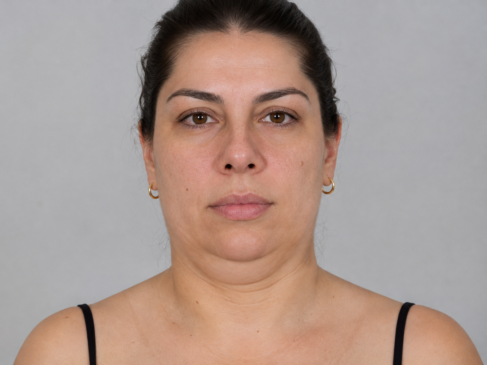
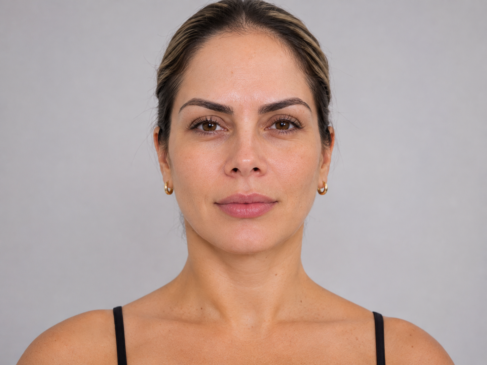
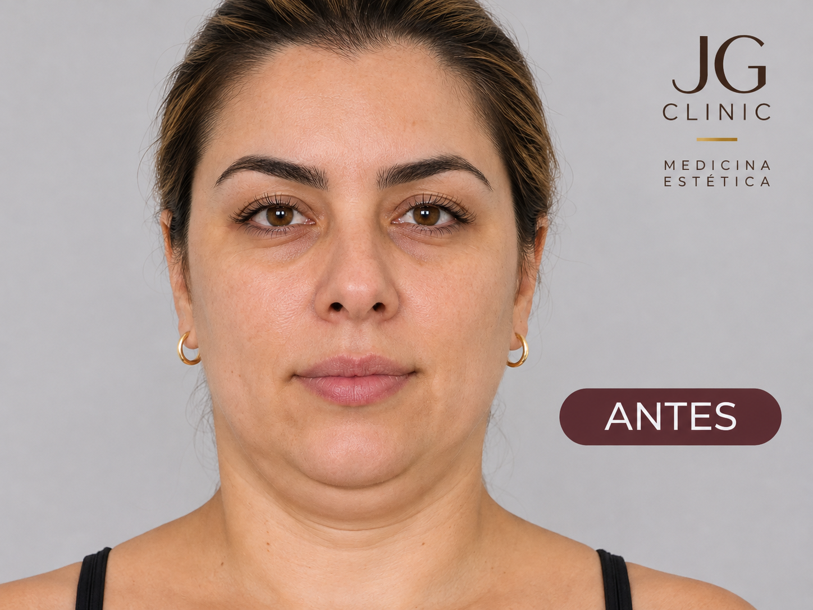
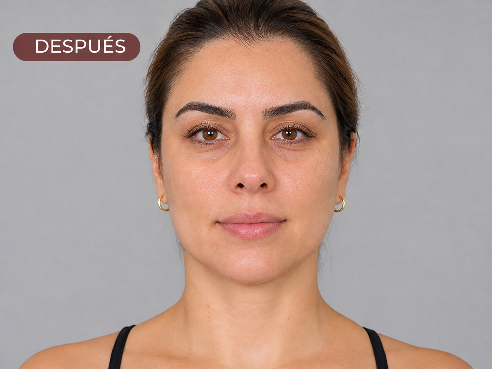

Si te miras al espejo y notas que el contorno de tu rostro ya no es el de antes, que la zona bajo el mentón se ve más llena o que la piel del cuello perdió firmeza, no estás solo: es una de las consultas más frecuentes en medicina estética. Durante años, la única respuesta real era la cirugía. Hoy existe una alternativa intermedia, el endolifting, capaz de actuar sobre dos problemas a la vez: el exceso de grasa y la flacidez de la piel.
En esta guía encontrarás todo lo que necesitas saber antes de decidirte: qué es, cómo funciona, a quién le sirve, cómo se ven los resultados, cómo se compara con otros láseres y tratamientos del mercado, qué cuidados exige y, sobre todo, por qué la experiencia del equipo médico es el factor que más pesa en el resultado.
¿Qué es el endolifting?
El endolifting (también escrito "endolift" o "lifting láser subdérmico") es un procedimiento en el que una fibra óptica muy fina, de unos 200 a 300 micras, se introduce bajo la piel a través de accesos mínimos para entregar energía láser directamente en el tejido subcutáneo. La palabra lo resume: "endo" significa interno y "lift" significa elevar. A diferencia de los láseres que trabajan desde la superficie, aquí la energía se aplica dentro del tejido, justo donde están la grasa y el soporte de la piel.
Ese contacto directo permite dos efectos complementarios. Primero, la energía actúa sobre el tejido graso y lo reduce de forma localizada. Segundo, el calor controlado sobre las fibras de colágeno provoca una contracción inmediata de la piel y estimula la formación de colágeno nuevo durante los meses siguientes, lo que da el efecto de lifting progresivo y natural.
¿Para qué sirve? Zonas que se pueden tratar
El endolifting se diseñó originalmente para el tercio inferior del rostro, pero su uso se ha extendido a otras zonas donde coinciden grasa localizada y flacidez leve a moderada:
Antes y después: papada y contorno facial
La papada es el área donde el endolifting muestra con más claridad su valor. En un "antes" típico se observa un volumen graso bajo el mentón que borra el ángulo cervicomentoniano, a veces con piel laxa que cuelga. En el "después", una vez resuelta la inflamación inicial y con la retracción de la piel avanzando, el contorno se ve más definido y la línea mandibular recupera nitidez.




Los resultados varían de una persona a otra según la edad, la calidad de la piel, la cantidad de grasa y el cuidado posterior. Las imágenes corresponden a pacientes reales de JG Clinic y se publican con su consentimiento. Fotografías sin retoque, tomadas en las mismas condiciones.
Cuándo se ve el resultado. Parte del tensado se nota desde el inicio, pero la imagen final se construye con el tiempo: la inflamación baja en los primeros días y semanas, y la producción de colágeno sigue organizándose durante meses. Lo habitual es evaluar el resultado más completo alrededor de los seis meses. Según el fabricante de la técnica original y clínicas especializadas, el efecto puede mantenerse alrededor de dos años, aunque el envejecimiento natural de cada persona continúa.
¿Es ideal si quiero quitar grasa localizada?
Sí, siempre que hablemos de grasa localizada y no de obesidad. El endolifting no es un método para bajar de peso: es un tratamiento de contorno. Es especialmente útil para quien tiene un depósito graso concreto (como la papada) que no cede con dieta ni ejercicio, y que además presenta algo de flacidez, porque el mismo procedimiento trata ambos componentes.
Puede requerir otra alternativa: flacidez severa con exceso importante de piel, o cuando la valoración médica indica que la cirugía ofrecerá un mejor resultado. En esos casos te lo diremos con claridad en la consulta.
Cómo se realiza: paso a paso
- Valoración médica.Revisión de antecedentes, análisis del rostro y cuello, evaluación de la grasa y de la elasticidad de la piel, y definición de objetivos realistas.
- Marcaje y preparación.Se marca la zona y se limpia la piel. Se planifican los puntos de acceso y la distribución de la energía.
- Anestesia local.El procedimiento se realiza con anestesia local, por lo que se tolera bien y no requiere hospitalización.
- Entrega de energía con fibra óptica.La fibra se introduce por accesos mínimos y se desplaza en abanico bajo la piel, entregando la energía de forma uniforme y controlada.
- Compresión y cuidados iniciales.Se coloca la compresión indicada y se entregan instrucciones claras de cuidado posterior.
- Control y seguimiento.Se programan revisiones para evaluar la evolución y decidir si hace falta una sesión complementaria.
La duración total depende de la zona y de la extensión del tratamiento, y suele ser una intervención ambulatoria: sales de la clínica el mismo día.
Tecnología: láseres Fotona y GyG Soluciones
La seguridad y la precisión de un procedimiento láser dependen, en buena parte, de la calidad del equipo y del respaldo técnico que lo acompaña. JG Clinic trabaja con tecnología láser Fotona, una de las plataformas de láser médico más reconocidas del mundo, distribuida en Costa Rica y en América Latina por GyG Soluciones, empresa fundada por Abel González, que ofrece soporte técnico, capacitación y mantenimiento en la región.
Contar con un distribuidor local con servicio técnico y entrenamiento continuo no es un detalle menor: asegura que los equipos operen calibrados, que los protocolos se actualicen y que el equipo médico tenga acceso a formación del propio fabricante, algo que se traduce en consistencia y seguridad para el paciente.
Comparativa: endolifting frente a otros láseres y tratamientos
No todos los láseres ni todas las tecnologías de lifting hacen lo mismo. Esta tabla resume las diferencias principales para que puedas decidir con información. Es una comparación orientativa: la mejor opción siempre depende de tu caso.
| Tecnología | Cómo actúa | Grasa localizada | Tensado de piel | Invasividad | Recuperación |
|---|---|---|---|---|---|
| Endolifting (láser subdérmico, fibra óptica) | Energía láser dentro del tejido subcutáneo | Sí, de forma directa | Alto: retracción inmediata y progresiva | Mínima (accesos milimétricos) | Corta, pocos días de inflamación |
| Láser Nd:YAG / Er:YAG de superficie (ej. protocolos Fotona 4D) | Energía desde la superficie o por vía intraoral para estimular colágeno | No | Moderado, mejora calidad de piel | No invasivo | Prácticamente nula |
| Láser CO₂ fraccionado | Microcolumnas de ablación para renovar la piel | No | Moderado, mejora textura y arrugas finas | Ablativo superficial | Varios días con enrojecimiento |
| Láser de diodo 980 nm (lipólisis clásica) | Se absorbe más en grasa y hemoglobina | Sí | Menor que 1470 nm | Mínima | Corta |
| Radiofrecuencia / helio plasma | Calor controlado en dermis y subdermis | Limitado | Moderado a alto según equipo | No invasiva a mínima | Corta |
| HIFU (ej. Ultherapy) | Ultrasonido focalizado en capas profundas | No | Moderado, progresivo | No invasivo | Nula |
| Hilos tensores | Reposicionan tejido de forma mecánica | No | Alto, efecto de reposicionamiento | Mínima | Corta |
| Lifting quirúrgico | Reposiciona tejido y retira exceso de piel | Según técnica | Muy alto | Alta (cirugía, anestesia) | Prolongada |
¿Por qué el endolifting es una gran opción?
- Trata grasa y flacidez a la vez. La mayoría de las tecnologías no invasivas hacen una cosa o la otra; el láser subdérmico aborda ambas en un solo procedimiento.
- Energía donde se necesita. Al aplicarse dentro del tejido, no se pierde energía atravesando capas superficiales, y puede dosificarse de forma muy localizada.
- Sin cirugía, con recuperación corta. Evita incisiones extensas, suturas y largos tiempos de baja.
- Compatible con otros tratamientos. Se combina muy bien con bioestimuladores, rellenos o hilos dentro de un plan integral.
- Apto para distintos tipos de piel. Al actuar bajo la piel y no sobre el pigmento, se utiliza en distintos fototipos.
Dicho con honestidad: ninguna tecnología sustituye a la cirugía cuando hay flacidez severa, y los tratamientos de superficie como la radiofrecuencia o el HIFU son excelentes para pacientes con menos grasa y flacidez leve que buscan cero recuperación. Parte de nuestro trabajo en la consulta es indicarte cuál es el adecuado para ti, aunque no sea el endolifting.
Un tratamiento exige mano experta: ciencia, anatomía y arte
En el endolifting, la tecnología es solo la mitad de la ecuación. La otra mitad es quien la maneja. Bajo la piel del cuello y la mandíbula transcurren vasos, nervios y planos anatómicos que exigen precisión milimétrica: los propios especialistas del sector coinciden en que la falta de conocimiento fundamental de la técnica es una de las principales causas de complicaciones. Por eso la formación anatómica y la experiencia pesan tanto como el láser.
Ese es el eje del trabajo de la Dra. Jenireé Gutiérrez: arte basado en ciencia y anatomía, respaldado por entrenamiento continuo que incluye laboratorios de anatomía en cadáver fresco, certificaciones internacionales y su participación como docente y speaker en congresos de la región. Si quieres conocer ese recorrido, lo detallamos en nuestro artículo Por qué JG Clinic es la mejor clínica de medicina estética en Costa Rica en 2026.
Médico Cirujana (UCIMED) con Máster en Medicina Estética por la Universidad de Buenos Aires. Docente, speaker internacional de Merz Aesthetics DP LATAM y Experta en Péptidos certificada por ISSCA.
Parte del equipo médico de JG Clinic, trabaja bajo los mismos protocolos y estándares de calidad de la clínica en la valoración y ejecución de procedimientos de medicina estética.
Capacitadas por los speakers oficiales de la técnica
En JG Clinic, las doctoras se han capacitado en endolifting a nivel nacional e internacional de la mano de los speakers oficiales de la marca, entre ellos el Dr. Tomita, referente en la técnica, quien ha realizado procedimientos a figuras de Televisa, Miss México y muchas otras personalidades del cine, la televisión, las novelas y Netflix.
Aprender directamente de quienes desarrollan y enseñan la técnica importa: significa dominar la selección del paciente, la dosificación de energía, el manejo de la fibra bajo la piel y la prevención de complicaciones, con el mismo estándar con el que se trata a pacientes de alto perfil. Es la diferencia entre "tener un láser" y saber usarlo.
Riesgos y efectos esperables: lo que debes saber
Un buen tratamiento comienza con información completa. Después de un endolifting es normal presentar inflamación, sensibilidad, enrojecimiento y moretones en la zona durante los primeros días. Con menor frecuencia pueden aparecer induración temporal o cambios transitorios de sensibilidad. En el tercio inferior del rostro existe además una rama del nervio facial cercana a la mandíbula que puede resentirse de forma pasajera si se maneja con calor inadecuado, razón por la que la técnica debe ejecutarla un médico con dominio anatómico. La valoración previa descarta contraindicaciones como el embarazo, infecciones activas o trastornos de coagulación, entre otras.
Cuidados posteriores: cómo cuidar tu resultado
Los cuidados posteriores influyen directamente en cómo evoluciona la inflamación y en cuánto se aprovecha la retracción de la piel. Estas son las pautas generales; siempre prevalecen las indicaciones personalizadas que te entregue tu médica:
- Usa la compresión como se te indique.La mentonera o prenda de compresión favorece que la piel se adhiera a los nuevos planos y ayuda a controlar la inflamación.
- Maneja la inflamación.Duerme con la cabeza ligeramente elevada los primeros días y evita el calor intenso (sauna, vapor, agua muy caliente) en las primeras 48 a 72 horas.
- Pospón el ejercicio intenso.Retoma la actividad física fuerte de forma gradual, cuando tu médica lo autorice.
- Protégete del sol.Usa protector solar de amplio espectro todos los días y evita la exposición solar directa en la zona tratada.
- No manipules la zona.Evita masajes, presión o maniobras sobre el área a menos que sean parte de tu indicación.
- Hidrátate y cuida tu piel.Una buena hidratación y una rutina de skincare adecuada apoyan la calidad del colágeno nuevo.
- Asiste a tus controles.Las revisiones permiten evaluar el avance y decidir si se requiere alguna sesión complementaria.
Cuánto cuesta y cuántas sesiones se necesitan
El valor del endolifting depende de la zona, de la extensión del tratamiento y de si se combina con otros procedimientos, por lo que no existe un precio único. La mayoría de los pacientes consigue su resultado con una sesión, y algunos casos pueden beneficiarse de una sesión complementaria tras la evaluación de los controles. En la valoración recibes un plan y un presupuesto claros, sin sorpresas.
Agenda tu valoración de endolifting en JG Clinic
Atendemos en dos sedes: Santa Ana Town Center (Local 14 y 15, San José) y en el centro de Liberia, Guanacaste. En tu primera cita revisamos tu caso, definimos qué tratamiento es el indicado y te explicamos qué resultado es realista.
Fuentes y referencias
- The Endo-lift Laser (Intralesional 1470 nm Diode Laser) for Dermatological Aesthetic Conditions: A Systematic Review. Aesthetic Plastic Surgery, 2024.
- Endolift (1,470 nm diode laser) y helio plasma/radiofrecuencia: estudio de terapia combinada para flacidez. PubMed Central.
- Endolift: What You Need to Know. RealSelf.
- Lifting, tightening and fat removal with bare optical fiber. The Aesthetic Guide.
Nota: "Endolift" es una marca registrada de Eufoton. En este artículo se usa también el término genérico "endolifting" para describir la técnica de láser subdérmico con fibra óptica.